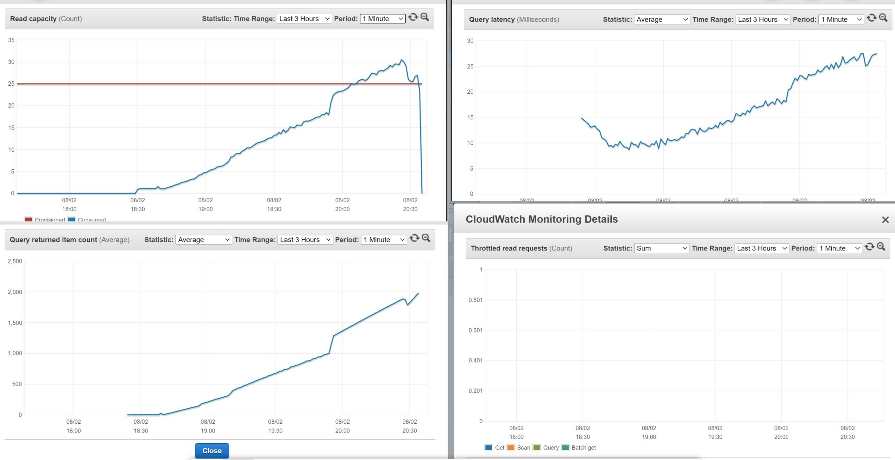
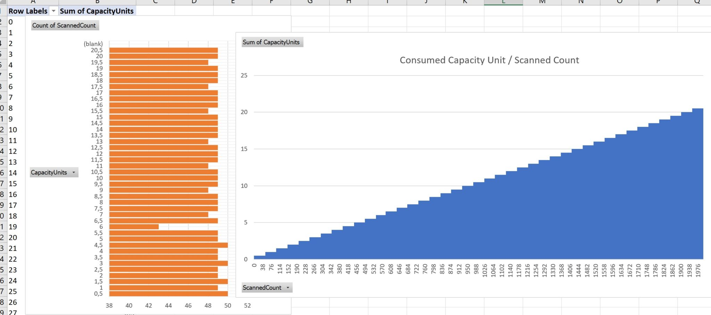
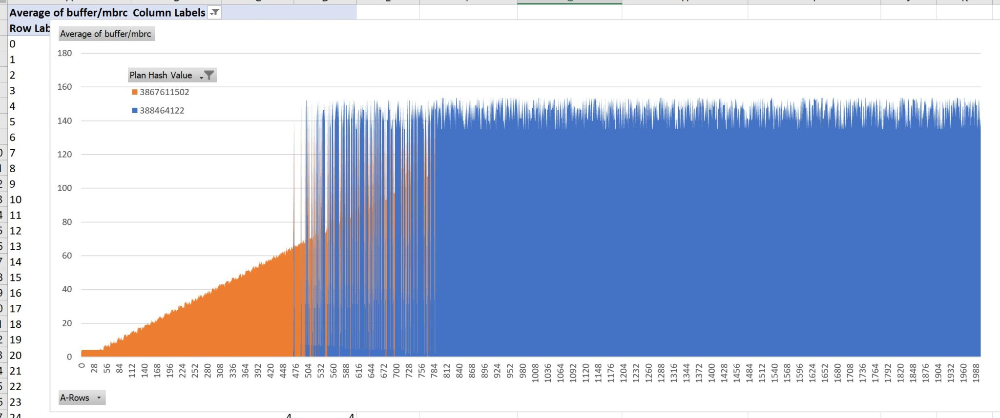

This was first published on https://www.dbi-services.com/blog/rdbms-scales-the-algorithm/ (2020-08-03)
Republishing here for new followers. The content is related to the versions available at the publication date.
.
In The myth of NoSQL (vs. RDBMS) “joins dont scale” I explained that joins actually scale very well with an O(logN) on the input tables size, thanks to B*Tree index access, and can even be bounded by hash partitioning with local index, like in DynamoDB single-table design. Jonathan Lewis added a comment that, given the name of the tables (USERS and ORDERS). we should expect an increasing number of rows returned by the join.
In this post I’ll focus on this: how does it scale when index lookup has to read more and more rows. I’ll still use DynamoDB for the NoSQL example, and this time I’ll do the same in Oracle for the RDBMS example.
aws dynamodb create-table \
--attribute-definitions \
AttributeName=MyKeyPart,AttributeType=S \
AttributeName=MyKeySort,AttributeType=S \
--key-schema \
AttributeName=MyKeyPart,KeyType=HASH \
AttributeName=MyKeySort,KeyType=RANGE \
--billing-mode PROVISIONED \
--provisioned-throughput ReadCapacityUnits=25,WriteCapacityUnits=25 \
--table-name Demo
This creates a DEMO table with MyKeyPart as a hash key and MyKeySort as a sort key. I’m on the AWS Free Tier with limited capacity unit, so don’t check the time. I’ll measure the efficiency from CloudWatch metrics and consumed capacity units.
while aws --output json dynamodb describe-table --table-name Demo | grep '"TableStatus": "CREATING"' ; do sleep 1 ; done 2>/dev/null | awk '{printf "."}END{print}'
This is how I wait the the creation to be completed.
I’ll store 1999000 items as 0+1+2+3+…+1999 to query them later. Each hash key value having a different number of rows.
import boto3, time, datetime
from botocore.config import Config
dynamodb = boto3.resource('dynamodb',config=Config(retries={'mode':'adaptive','total_max_attempts': 10}))
n=0 ; t1=time.time()
try:
for k in range(0,2000):
for s in range(1,k+1):
r=dynamodb.Table('Demo').put_item(Item={'MyKeyPart':f"K-{k:08}",'MyKeySort':f"S-{s:08}",'seconds':int(time.time()-t1),'timestamp':datetime.datetime.now().isoformat()})
time.sleep(0.05);
n=n+1
except Exception as e:
print(str(e))
t2=time.time()
print(f"Last: %s\n\n===> Total: %d seconds, %d keys %d items/second\n"%(r,(t2-t1),k,n/(t2-t1)))
The outer loop iterates 2000 times to generate 2000 values for MyKeyPart, so that when I read for one value of MyKeyPart I read only one hash partition. The inner loop generates from 1 to 2000 values for S. Then this generates 1999000 rows in total. K-00000001 has one item, K-00000002 has two items, K-00000042 has 42 items,… until K-00001999 with 1999 items.
I’ll query for each value of MyKeyPart. The query will read from one partition and return the items. The goal is to show how it scales with an increasing number of items.
for i in {100000000..100001999}
do
aws dynamodb query \
--key-condition-expression "MyKeyPart = :k" \
--expression-attribute-values '{":k":{"S":"'K-${i#1}'"}}' \
--return-consumed-capacity TABLE \
--return-consumed-capacity INDEXES \
--select ALL_ATTRIBUTES \
--table-name Demo
done
}
This is a simple Query with the partition key value from K-00000000 to K-00001999. I’m returning the consumed capacity.
For example, the last query for K-00001999 returned:
...
},
{
"seconds": {
"N": "117618"
},
"MyKeyPart": {
"S": "K-00001999"
},
"MyKeySort": {
"S": "S-00001999"
},
"timestamp": {
"S": "2020-08-02T17:05:53.549532"
}
}
],
"ScannedCount": 1999,
"ConsumedCapacity": {
"CapacityUnits": 20.5,
"TableName": "Demo",
"Table": {
"CapacityUnits": 20.5
}
}
}
This query returned 1999 items using 20.5 RCU which means about 49 items per 0.5 RCU. Let’s do some math: eventually consistent query reads 4KB with 0.5 RCU, my items are about 90 bytes (in DynamoDB the attribute names are stored for each row)
$ wc -c <<<"117618 K-00001999 S-00001999 2020-08-02T17:05:53.549532 seconds MyKeyPart MyKeySort timestamp"
94So 49 items like this one is about 4KB… we are in the right ballpark.
Here are some CloudWatch statistics which shows that everything scales more or less linearly with the number of items retrieved:

The CloudWatch gathered every minute is not very precise, and I benefit from some bustring capacity. Here is the graph I’ve made from ScannedCount and CapacityUnits returned by the queries:

No doubt, that the big advantage of NoSQL: simplicity. Each time you read 4KB with eventual consistency you consume 0.5 RCU. The more items you have to read, the more RCU. This is linear and because the cost (in time and money) is proportional to the RCU, you can clearly see that it scales linearly. It increases in small steps because each 0.5 RCU holds many rows (49 on average).
This is how NoSQL scales: more work needs more resources, in a simple linear way: reading 500 items consumes 10x the resources needed to read 50 items. This is acceptable in the cloud because underlying resources are elastic, provisioned with auto-scaling and billed on-demand. But can we do better? Yes. For higher workloads, there may be faster access paths. With DynamoDB there’s only one: the RCU which depends on the 4KB reads. But SQL databases have multiple read paths and an optimizer to choose the best one for each query.
For the SQL example, I’ve run a similar workload on the Autonomous Database in the Oracle Free Tier.
create table DEMO (
MyKeyPart varchar2(10)
,MyKeySort varchar2(10)
,"seconds" number
,"timestamp" timestamp
,constraint DEMO_PK primary key(MyKeyPart,MyKeySort) using index local compress)
partition by hash(MyKeyPart) partitions 8;
This is a table very similar to the DynamoDB one: hash partition on MyKeyPart and local index on MyKeySort.
insert /*+ append */ into DEMO
select
'K-'||to_char(k,'FM09999999') K,
'S-'||to_char(s,'FM09999999') S,
0 "seconds",
current_timestamp "timestamp"
from
(select rownum-1 k from xmltable('1 to 2000'))
,lateral (select rownum s from xmltable('1 to 2000') where rownum<=k) x
order by k,s
/
This is similar to the python loops I’ve used to fill the DynamoDB table. I use XMLTABLE as a row generator, and lateral join as an inner loop. The select defines the rows and the insert loads them directly without going though application loops.
SQL> select count(*) from DEMO;
COUNT(*)
____________
1,999,000
I have my 1999000 rows here.
commit;
When you are ok with your changes, don’t forget to get them visible and durable as a whole. This takes not time.
In order to do something similar to the DynamoDB queries, I’ve generated a command file like:
select * from DEMO where K='K-00000000';
select * from dbms_xplan.display_cursor(format=>'allstats last +cost');
select * from DEMO where K='K-00000001';
select * from dbms_xplan.display_cursor(format=>'allstats last +cost');
select * from DEMO where K='K-00000002';
select * from dbms_xplan.display_cursor(format=>'allstats last +cost');
...
select * from DEMO where K='K-00001998';
select * from dbms_xplan.display_cursor(format=>'allstats last +cost');
select * from DEMO where K='K-00001999';
select * from dbms_xplan.display_cursor(format=>'allstats last +cost');
For each one I queried the execution plan which is much more detailed than the –return-consumed-capacity
I have built the following graph with the results from the execution plan. Rather than showing the optimizer estimated cost, I used the execution statistics about the buffer reads, as they are the most similar to the DynamoDB RCU. However, I have two kinds of execution plan: index access which reads 8KB blocks, and full table scan which is optimized with multiblock reads. In the following, I have normalized this metric with the ratio of multiblock reads to single block reads, in order to show both of them:

Of course, the table can grow, and then a full table scan is more expensive. But we can also increase the number of partitions in order to keep the FULL TABLE SCAN within the response time requirements because it actually reads one partition. And the beauty is that, thanks to SQL, we don’t have to change any line of code. The RDBMS has an optimizer that estimates the number of rows to be retrieved and chooses the right access path. Here, when retrieving between 500 and 800 rows, the cost of both is similar and the optimizer chooses one or the other, probably because I’m touching partitions with a small difference in the distribution. Below a few hundreds, the index access is clearly the best. Above a thousand, scanning the whole partition gets a constant cost even when the resultset increases.
Here are the execution plans I’ve built the graph from. This one is index access for few rows (I picked up the one for 42 rows):
DEMO@atp1_tp> select * from DEMO where K='K-00000042';
MyKeyPart MyKeySort seconds timestamp
_____________ _____________ __________ __________________________________
K-00000042 S-00000001 0 02-AUG-20 06.27.46.757178000 PM
K-00000042 S-00000002 0 02-AUG-20 06.27.46.757178000 PM
K-00000042 S-00000003 0 02-AUG-20 06.27.46.757178000 PM
...
K-00000042 S-00000042 0 02-AUG-20 06.27.46.757178000 PM
42 rows selected.
DEMO@atp1_tp> select * from dbms_xplan.display_cursor(format=>'allstats last +cost');
PLAN_TABLE_OUTPUT
_________________________________________________________________________________________________________________________________________
SQL_ID 04mmtv49jk782, child number 0
-------------------------------------
select * from DEMO where K='K-00000042'
Plan hash value: 3867611502
--------------------------------------------------------------------------------------------------------------------------------------
| Id | Operation | Name | Starts | E-Rows | Cost (%CPU)| A-Rows | A-Time | Buffers | Reads |
--------------------------------------------------------------------------------------------------------------------------------------
| 0 | SELECT STATEMENT | | 1 | | 6 (100)| 42 |00:00:00.01 | 5 | 1 |
| 1 | PARTITION HASH SINGLE | | 1 | 42 | 6 (0)| 42 |00:00:00.01 | 5 | 1 |
| 2 | TABLE ACCESS BY LOCAL INDEX ROWID BATCHED| DEMO | 1 | 42 | 6 (0)| 42 |00:00:00.01 | 5 | 1 |
|* 3 | INDEX RANGE SCAN | DEMO_PK | 1 | 42 | 3 (0)| 42 |00:00:00.01 | 3 | 0 |
--------------------------------------------------------------------------------------------------------------------------------------
Predicate Information (identified by operation id):
---------------------------------------------------
3 - access("K"='K-00000042')
3 buffers to read from the index and 2 additional buffers to read from the table ( one of them was not in cache and was a physical read). It is a single partition. The more rows are in the result and the more buffers have to be read from the table. I have about one thousand rows per 8KB buffer here (columns names are in the dictionary and not in each block, and I used the optimal datatypes like timestamp to store the timestamp).
Here I take the last query returning 1999 rows:
DEMO@atp1_tp> select * from DEMO where K='K-00001999';
K S seconds timestamp
_____________ _____________ __________ __________________________________
K-00001999 S-00000001 0 02-AUG-20 06.27.46.757178000 PM
K-00001999 S-00000002 0 02-AUG-20 06.27.46.757178000 PM
...
1,999 rows selected.
DEMO@atp1_tp> select * from dbms_xplan.display_cursor(format=>'allstats last +cost');
PLAN_TABLE_OUTPUT
_____________________________________________________________________________________________________________
SQL_ID g62zuthccp7fu, child number 0
-------------------------------------
select * from DEMO where K='K-00001999'
Plan hash value: 388464122
----------------------------------------------------------------------------------------------------------
| Id | Operation | Name | Starts | E-Rows | Cost (%CPU)| A-Rows | A-Time | Buffers |
----------------------------------------------------------------------------------------------------------
| 0 | SELECT STATEMENT | | 1 | | 21 (100)| 1999 |00:00:00.01 | 1604 |
| 1 | PARTITION HASH SINGLE | | 1 | 2181 | 21 (10)| 1999 |00:00:00.01 | 1604 |
|* 2 | TABLE ACCESS STORAGE FULL| DEMO | 1 | 2181 | 21 (10)| 1999 |00:00:00.01 | 1604 |
----------------------------------------------------------------------------------------------------------
Predicate Information (identified by operation id):
---------------------------------------------------
2 - storage("K"='K-00001999')
filter("K"='K-00001999')
One partition is full scanned. the execution plan shows 1604 buffers but there are many optimizations to get them faster and this is why finally the cost is not very high (cost=21 here means that reading 1605 sequential blocks is estimated to take the same time as reading 21 random blocks). One major optimization is reading 128 blocks with one I/O call (1MB multiblock read), another one is reading them bypassing the shared buffers (direct-path read) and here there’s even some offloading to STORAGE where rows are already filtered even before reaching the database instance.
I voluntarily didn’t get into the details, like why the cost of the full table scan has some variations. This depends on the hash distribution and the optimizer statistics (I used dynamic sampling here). You can read more about the inflection point where a full table scan is better than index access in a previous post: https://www.dbi-services.com/blog/oracle-12c-adaptive-plan-inflexion-point/ as this also applies to joins and scaling the algorithm can even happen after the SQL query compilation – at execution time – in some RDBMS (Oracle and SQL Server for example). As usual, the point is not that you take the numbers from this small example but just understand the behaviour: linear increase and then constant cost. NoSQL DynamoDB is optimized for key-value access. If you have queries reading many keys, you should stream the data into another database service. SQL databases like Oracle are optimized for the data and you can run multiple use cases without changing your application code. You just need to define the data access structures (index, partitioning) and the optimizer will choose the right algorithm.
People working with NoSQL technologies are used to see numbers and benchmarks on huge data size. And I’ve got a few comments like this one: Toy data size, perfect conditions (no joins, no concurrent reads or writes), no final comparison of actual speed. This is so misleading. This post is not there to sell a technology by throwing numbers but to understand how it works. NoSQL provides a simple API and scales with hardware. RDBMS provides complex algorithms to optimize before scaling out. To understand this, you need to observe how it works, which means reproduce the behaviour on a simple isolated small data set. That was the goal of the post. Now, you can extrapolate to huge data sets in order to know if you prefer to pay for coding and hardware, or for RDBMS software licenses. Nothing is free, but whatever you choose, both technologies can give you amazing results if you design and use them correctly.